ALFA ROMEO
採用深邃的暗黑基調與科技網格，烘托 Alfa Romeo 純粹的義式競技靈魂。在極致緊湊的版面中，透過高對比的色彩配置（紅/白/黑）與嚴謹的資訊分層，將繁複的駕馭模式與安全科技轉化為直覺的視覺動線，完美展現性能與工藝的結合。
在集團旗下 Alfa Romeo、Citroen、Jeep、Peugeot 四大國際汽車品牌間切換。從嚴謹的車輛資訊架構梳理、立體品牌周邊的材質轉譯，到高張力的數位視覺宣傳。褪去繁複的裝飾，以純粹的視覺對比與網格系統，確保每一次的設計產出皆精準傳達各品牌的獨特核心，並維持極高的跨媒材執行品質。
採用深邃的暗黑基調與科技網格，烘托 Alfa Romeo 純粹的義式競技靈魂。在極致緊湊的版面中，透過高對比的色彩配置（紅/白/黑）與嚴謹的資訊分層，將繁複的駕馭模式與安全科技轉化為直覺的視覺動線，完美展現性能與工藝的結合。
以法式前衛的幾何切割手法，完整駕馭 Peugeot 龐雜的科技與規格資訊。透過靈活的折口版面編排與大膽的視覺引導，讓硬派的機械透視圖與洗鍊的車身線條在頁面中優雅共存，展現獅王般大氣且精細的品牌語彙。
捨棄繁瑣的裝飾與框架，讓極具張力的壯闊地景成為版面主角。透過無邊際的滿版跨頁影像與強而有力的標題，將 Jeep 無畏邊界的硬派越野精神植入視覺深處，創造出如同翻閱頂級戶外探險雜誌般的沉浸式閱讀體驗。
運用明亮溫潤的色調與靈活的區塊劃分，呼應 Citroen 舒適活潑的家庭休旅定位。將龐大繁雜的配備表與空間機能，轉化為友善且具呼吸感的閱讀節奏，並巧妙穿插生活情境攝影，精準傳遞「舒適隨心」的法式浪漫哲學。
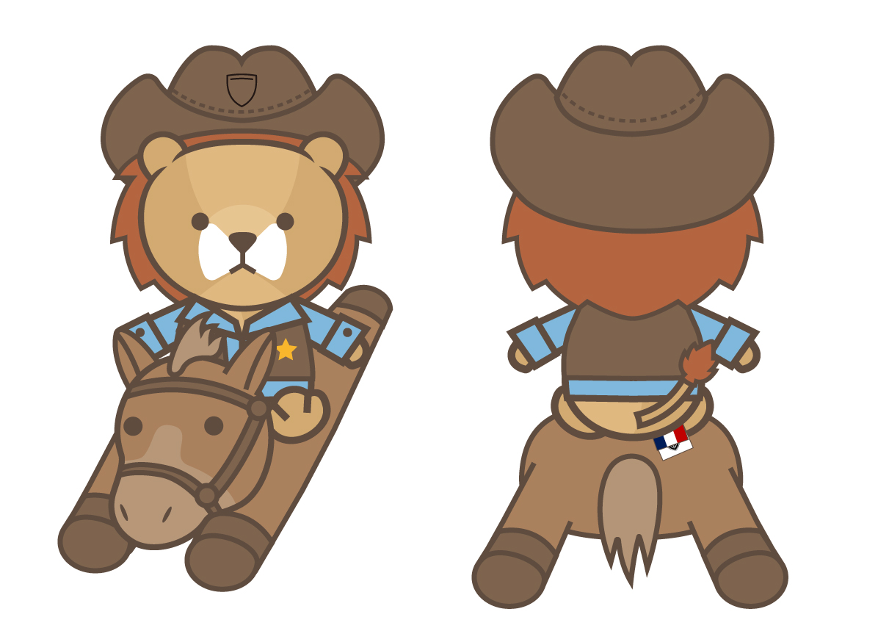
將 Peugeot 充滿力量的獅子意象轉化為具親和力的絨毛玩偶。在 2D 轉 3D 的過程中，精準微調吻部凸出比例與鬃毛層次，確保實體化後依然保有品牌的驕傲與可愛的平衡。精準挑選絨毛材質的長度與色票，將平面的高彩度無縫轉換至實體布料，解決印刷色與紡織品間的色差挑戰。
在緊密的幾何邊界內，展現橫跨四大品牌的視覺火力。從 Alfa Romeo 的競速熱血、Peugeot 的法式前衛，到 Citroen 的活潑。精準切換品牌調性，產出符合各平台規範的高張力數位視覺。
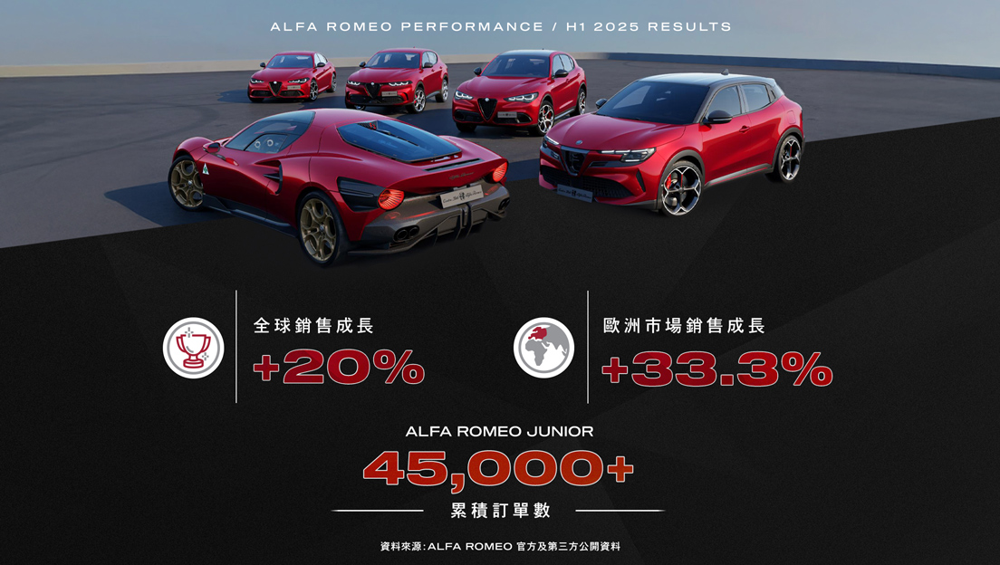
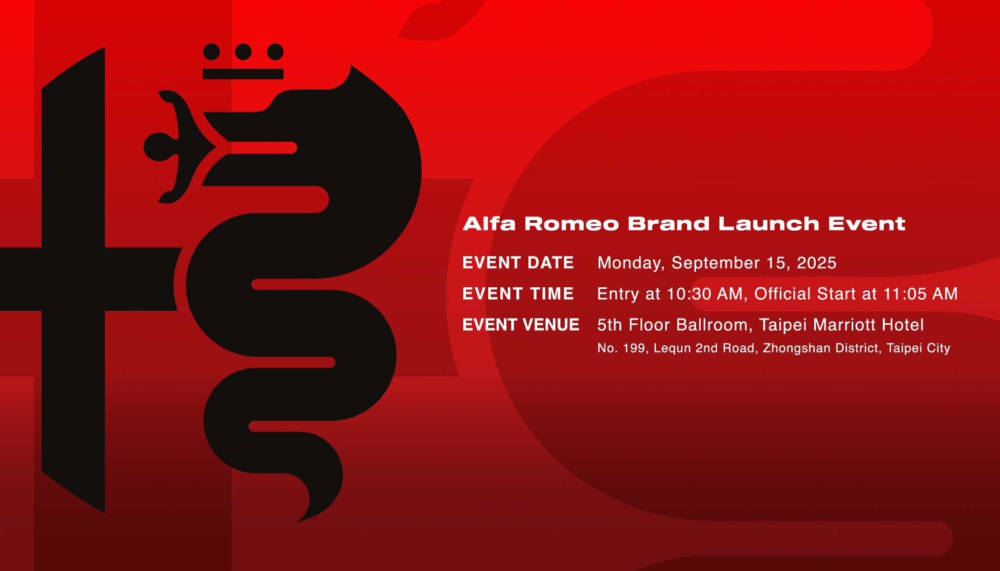
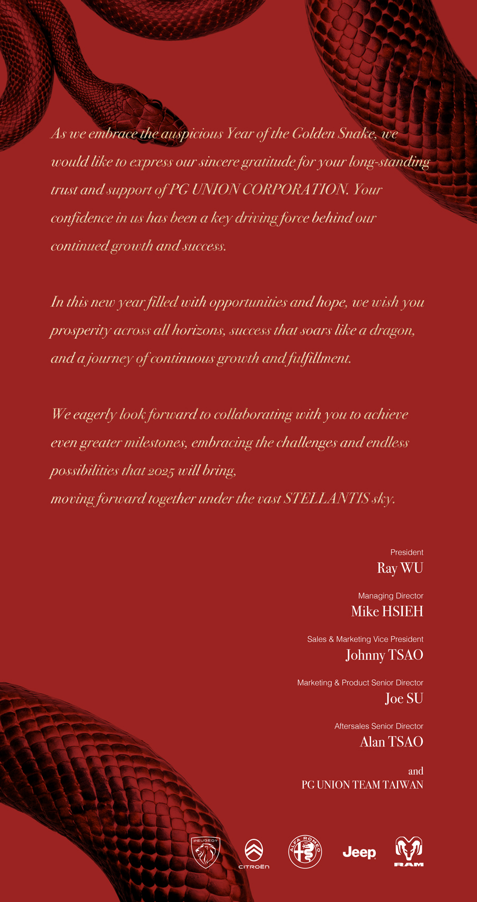
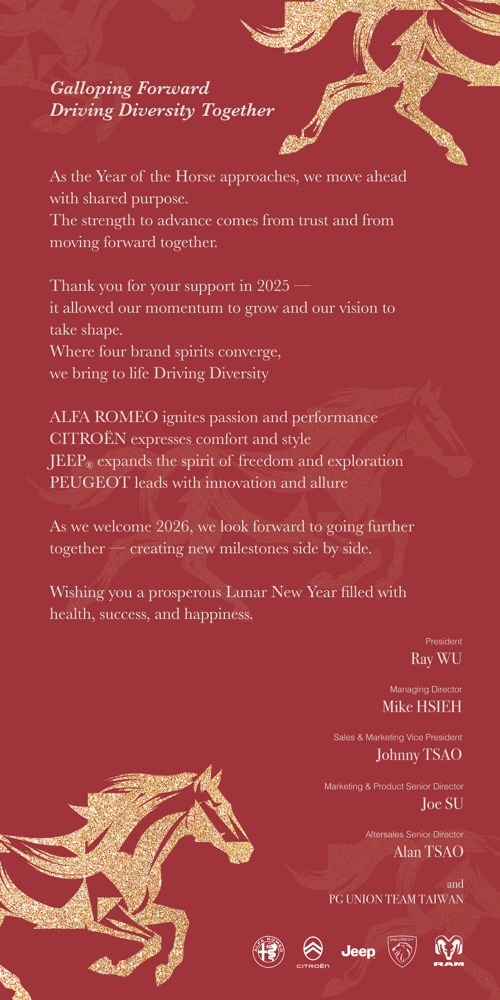
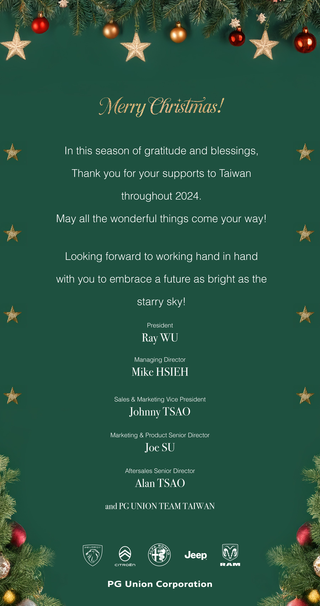
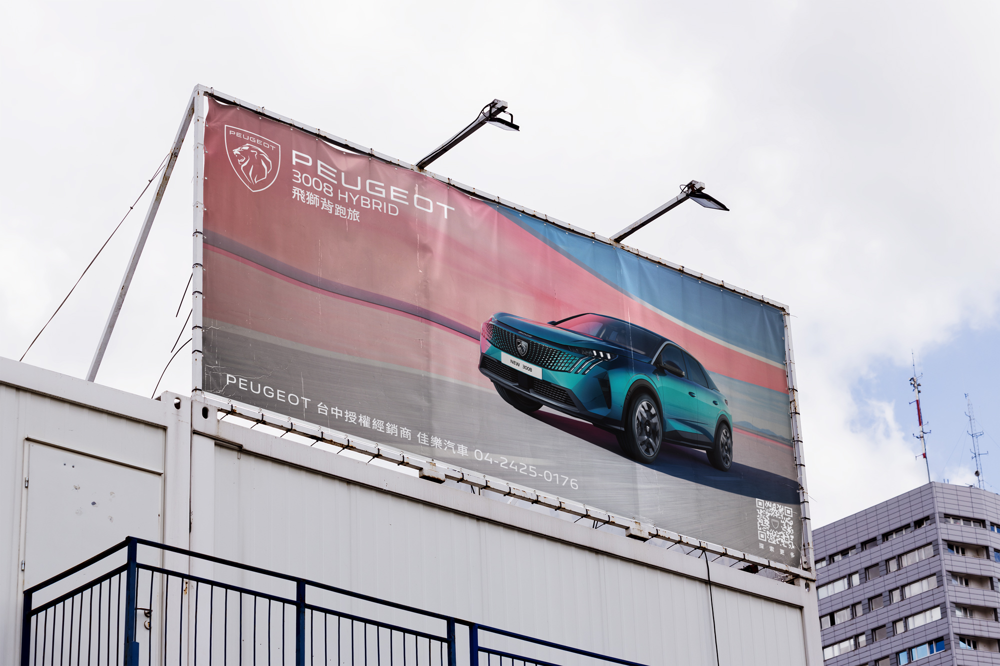
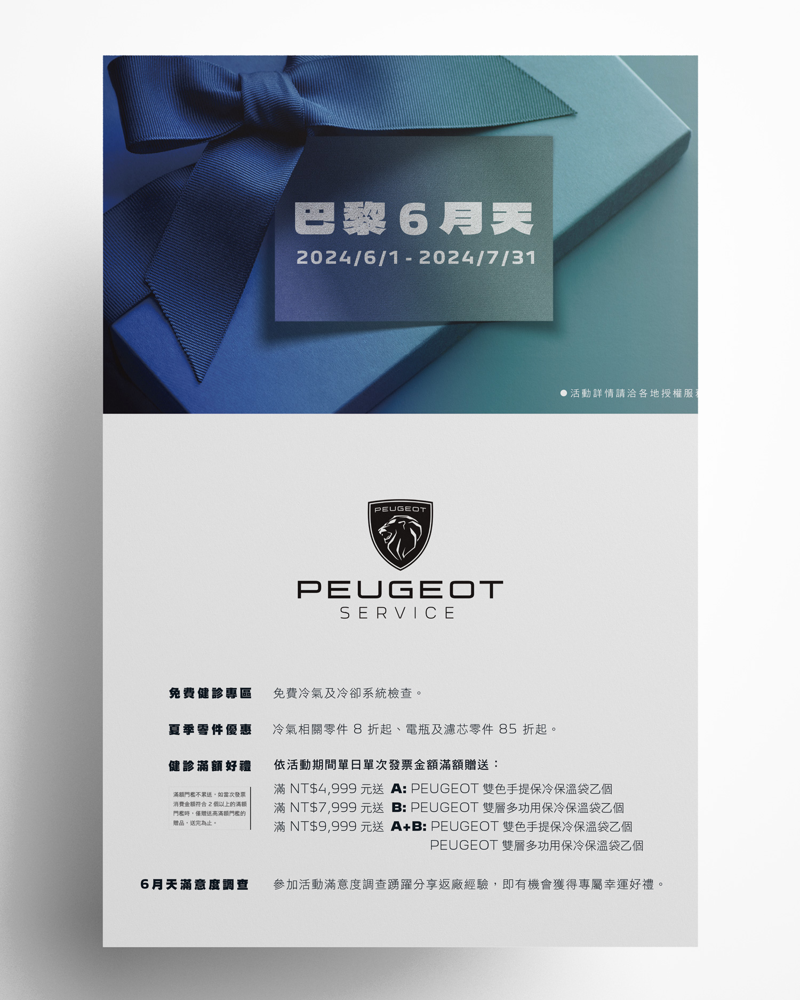
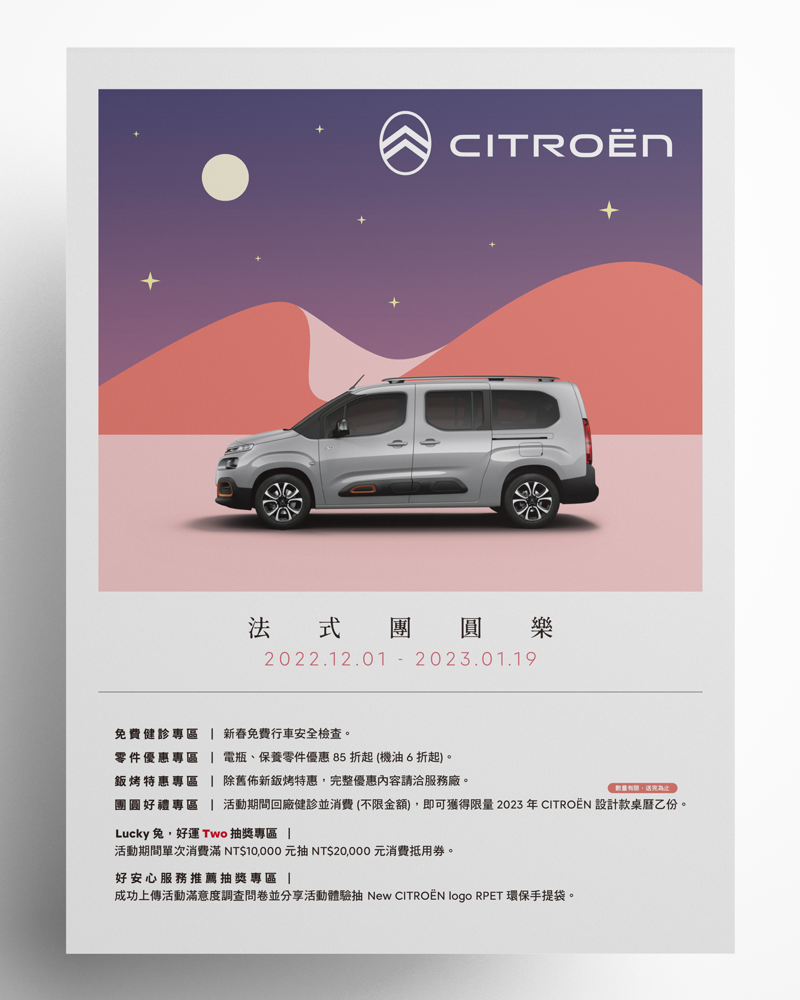
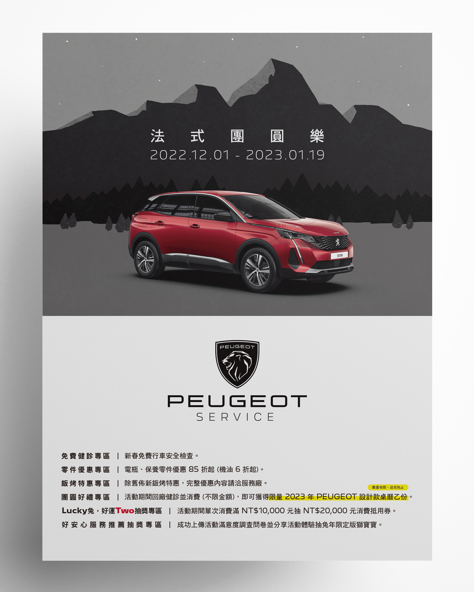
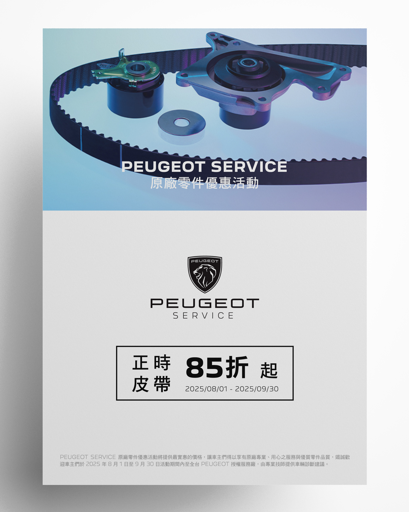